ODOO 19 · COMMUNITY & ENTERPRISE
Know where every kilo of your material is, what the job worker did with it, what it really cost and who approved every difference – material custody, vendor execution, production reporting, scrap, by-products, yield, quality, costing, reconciliation and compliance in one integrated Odoo workflow. Job Work 360 is a control tower built on top of Odoo's native subcontracting, inventory, purchase and accounting – it does not replace them.
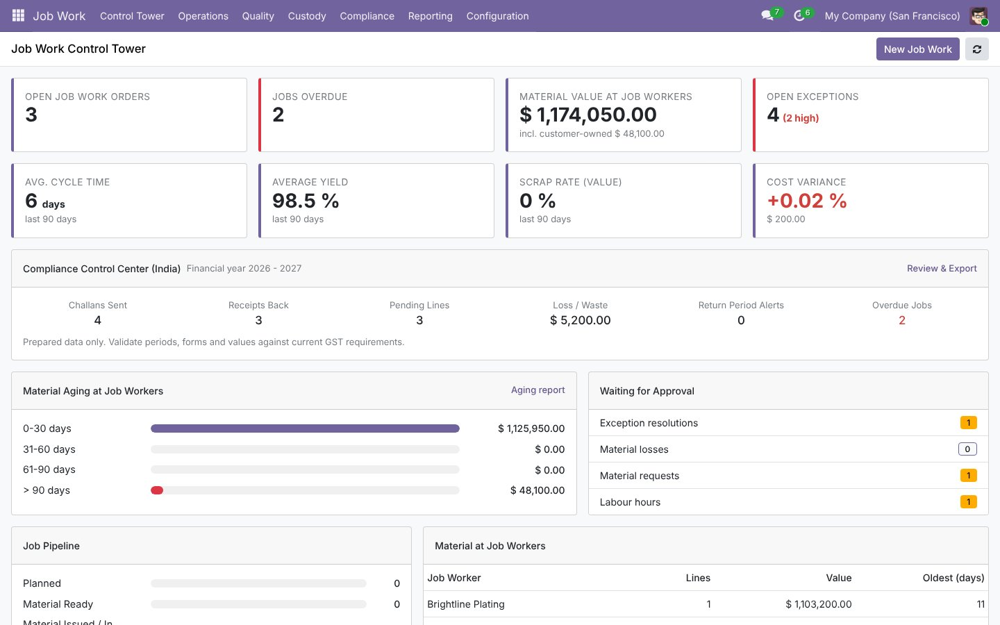
Every unexplained balance is closed with a reason code (weight difference, process loss, machine breakdown, defective raw material...). Waivers, high-severity items and chosen reasons go to a manager for approval, with optional write-off and vendor recovery.
Receive offcuts, turnings or returnable packaging together with the output. Expected by-products are proposed from the job type and posted to stock.
FIFO age of every open balance in configurable buckets (0–30, 31–60, 61–90, >90 days), aging pivot, dashboard panel and automatic alerts for material held too long.
Job work done for a principal: the material is moved with the customer as stock owner, reserved only from the customer's stock and excluded from your material cost.
Chain view across all stages and vendors: cost, scrap value, lead time and final quantity, with a printable chain traceability report.
Job workers log hours per operation from the portal; managers approve them and labour cost per unit is compared with the contracted rate.
Job Work Order → Material Issue → Subcontractor Stock → Processing → Receipt → Scrap / Yield → Quality → Costing → Reconciliation → Vendor Performance → Compliance
Issue → Process → Receive → Inspect → Reconcile → Close, with a clear status (Draft, Planned, Material Ready, Issued / In Transit, At Subcontractor, Processing, QC Pending, Completed, Reconciled, Closed) plus On Hold, Overdue, Disputed and Rework paths.
Know exactly what material is lying with every job worker, its value and how long it has been there. A dedicated custody location is created per job worker under the subcontracting location.
Record actual output, consumption, process scrap (including returnable scrap such as brass turnings), shortages, rejection, rework and approved losses – all as real stock moves.
Unaccounted = Sent − Consumed − Returned − Scrap − Approved Loss. Shortage, excess scrap, low yield, over-consumption, overdue, invoice and quality exceptions are raised automatically with severity and tolerance settings.
Expected vs actual raw material, job-work charges, freight, inspection, scrap impact and other costs, cost per accepted unit and cost variance – in company currency, multi-currency aware.
Bills are compared with the accepted quantity and the approved job rate. Quantity, rate and extra-charge variances are blocked until approved, put on hold or disputed – with audit trail.
Job workers accept or reject jobs, confirm material receipt, start, report production / scrap / rejection / rework, request material, upload certificates and delivery documents and submit completion – mobile friendly.
Job-level inspection with accepted, rejected, rework and scrap quantities, acceptance tolerance, automatic NCR and rework job creation. Works without Odoo Enterprise Quality.
Weighted scorecards (on-time, quality, yield, scrap, material variance, cost variance, responsiveness) with weights configurable per company, grades A–D.
Required, sent, received, accepted, rejected, rework, scrap, yield and material still at the job worker – at a glance.
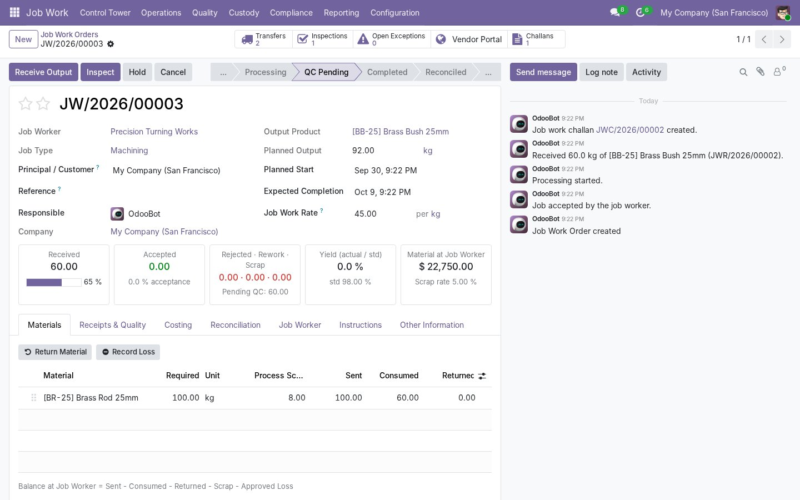
Standard consumption is proposed from the bill of material ratio; scrap can be received back as a by-product.
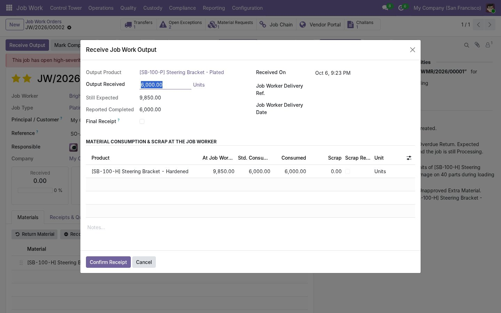
Sent vs consumed vs returned vs scrap vs approved loss, balance, value and age by job worker.
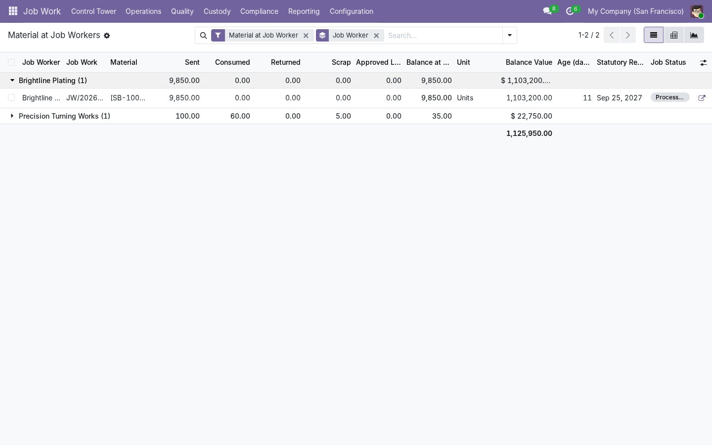
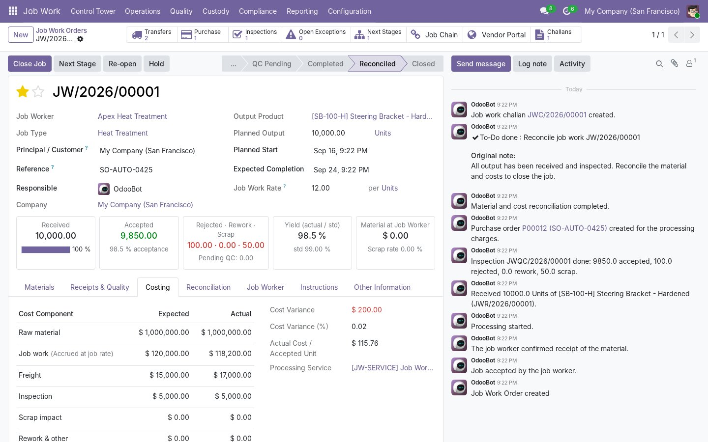
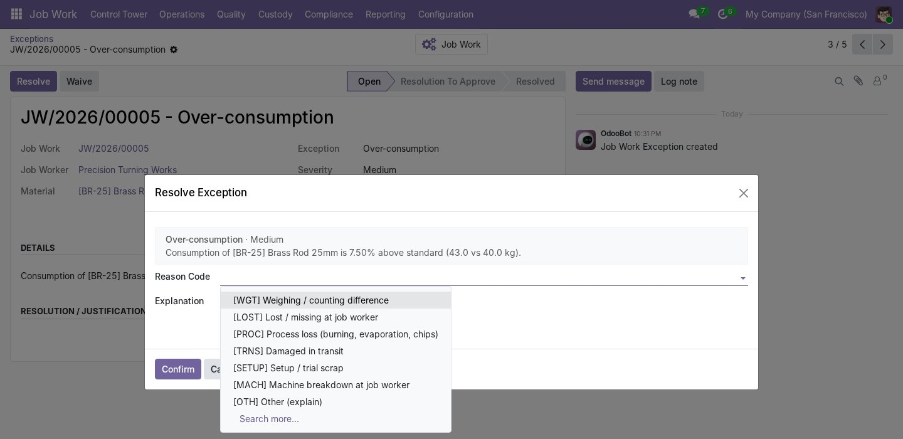
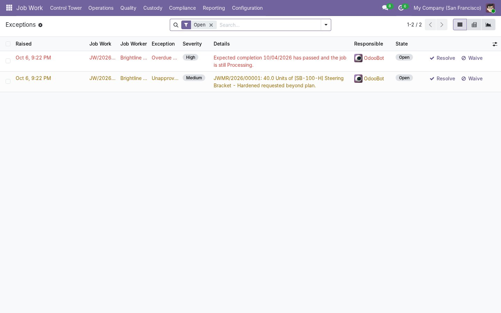
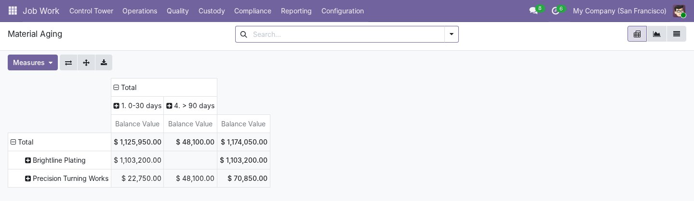
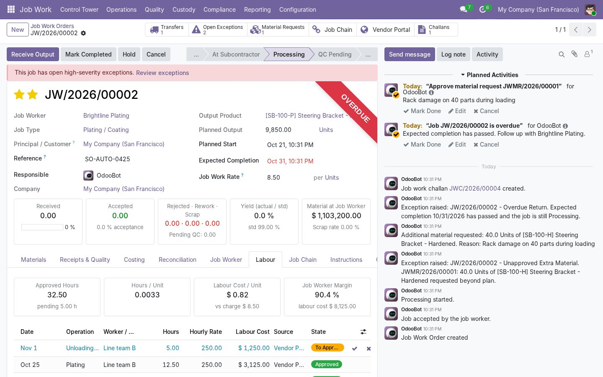
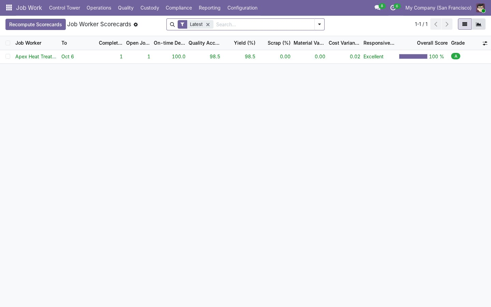
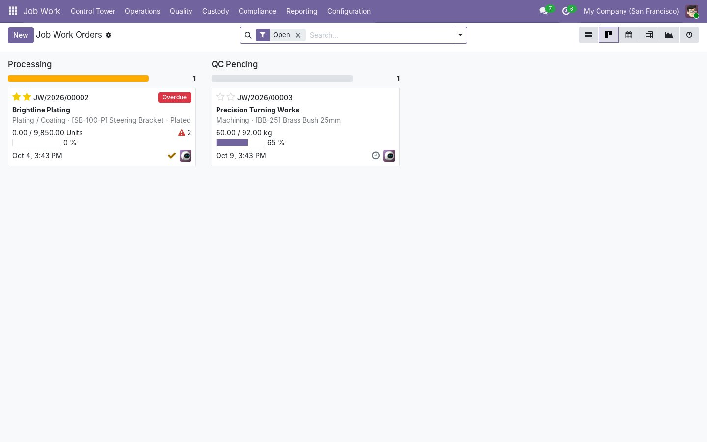
Deliberately simpler than the Odoo backend. Each job worker only sees its own jobs.
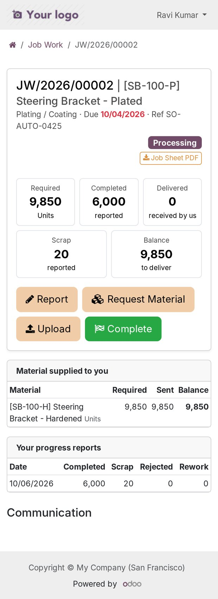
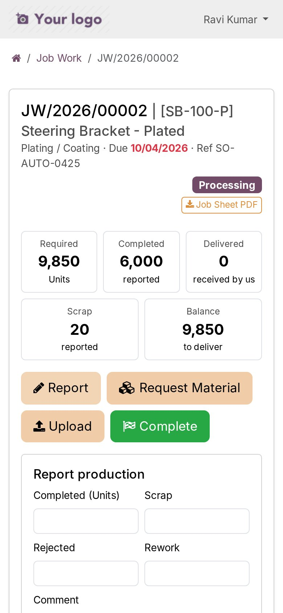
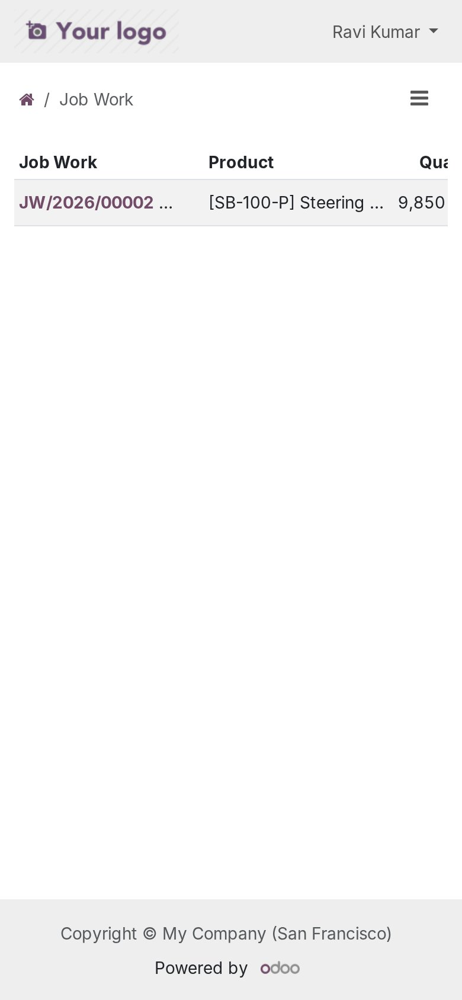
Switch on India Compliance in the settings (on automatically for companies in India): job work challan, E-Way Bill data and ITC-04 preparation from the same job work orders.
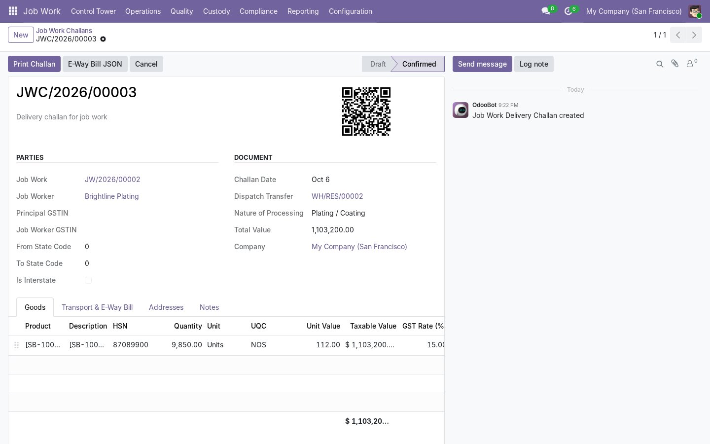
Created automatically when material is dispatched (or on demand before dispatch and updated with the validated quantities). Principal and job worker GSTIN, state codes, HSN, UQC, quantity, value, GST rate, job work reference, vehicle / transporter, source and destination, and a QR code. Printable PDF.
One click prepares the E-Way Bill JSON for delivery challans for job work (document type CHL, sub-supply type Job Work), with validation of GSTIN, PIN codes, HSN and transport details. Record the E-Way Bill number and validity on the challan.
Choose any period and export an XLSX with goods sent to job workers (Table 4), goods received back with losses & wastes (Table 5A) and a validation sheet listing missing GSTIN, HSN or UQC.
Configurable return periods for inputs and capital goods with advance alerts raised as exceptions on the job – nothing hard-coded.
Challans sent, receipts back, pending lines, loss / waste value, return-period alerts and overdue jobs for the financial year, on the Job Work dashboard.
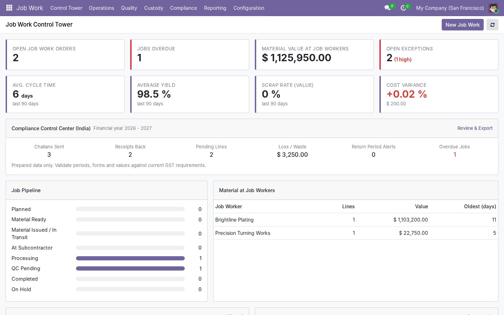
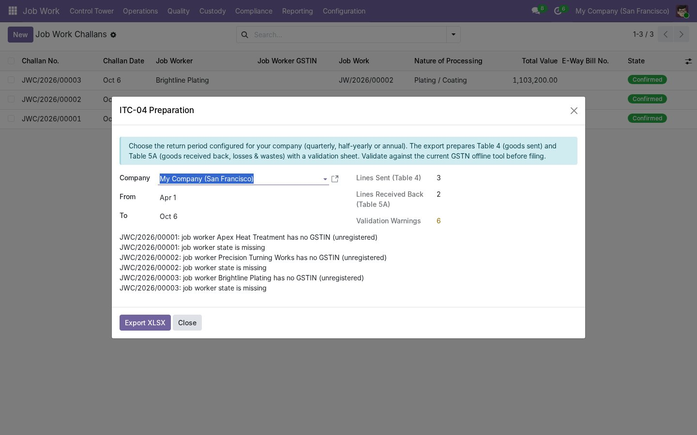
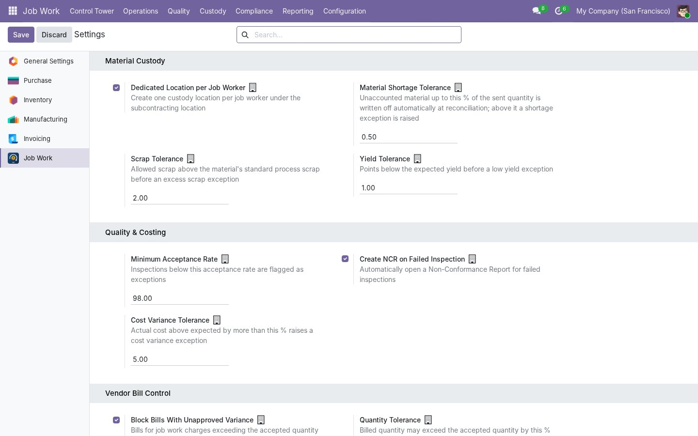
Odoo 19.0 Community and Enterprise, on-premise and Odoo.sh. Depends only on standard
modules: mrp_subcontracting, purchase_stock, portal.
ZivoIT Technologies configures Job Work 360 for your processes, migrates your data and connects it with your other systems.
Questions, demo, implementation, customization or integration?
ZivoIT Technologies · Odoo implementation partner